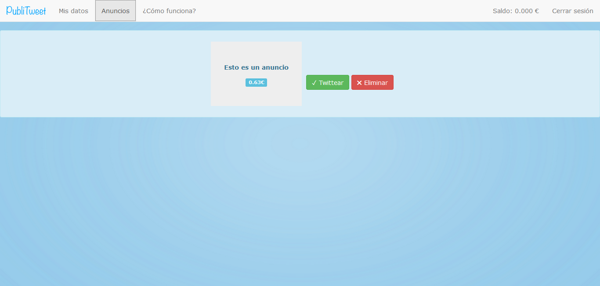

Desde PubliTweet le invitamos a que pruebe con el mínimo de recarga de Saldo: 1€, cualquier duda será disipada con hechos. Hemos dispuesto esta cantidad para que no le parezca un gasto grande e inseguro. Le recordamos que si tiene cualquier problema no dude en consultarnos. Estamos 100% a su disposición.
En pocos pasos puedes crear tu cuenta como twittero en PubliTweet. Deberás iniciar sesión con tu cuenta de Twitter a través de "Twitteros" de la página principal (o
Aquí).
Rellena los datos e inicia sesión otra vez.
Accederás a tu panel de usuario donde encontrarás datos sobre tu actividad en Twitter y en PubliTweet.
Cuando tengas un anuncio disponible para publicar @PubliTweetWeb te mandará un MD a través de Twitter. En la sección "Anuncios" tendrás la posible publicación.

Pulsando "Twittear" el anuncio será enviado con tu cuenta. También puedes "Eliminar" el anuncio en caso de que no te interese.
Puedes twittear el anuncio cuantas veces quieras pero el pago sólo se realizará con la primera. Podrás ver que tu saldo ya ha sido incrementado con el pago correspondiente al anuncio.
Cuando tengas acumulado un saldo superior a 2€ podrás pedir la exportación clickando en "Saldo".
A continuación deberás indicar tu cuenta en PayPal. (Deberá tener en cuenta que PayPal realiza un cobro de tasas por transferencias . Consulte sus bases
aquí )
Para cualquier problema contacta con nosotros por correo: contacto@publitweet.esy.es , o a través de Twitter: @PubliTweetWeb.